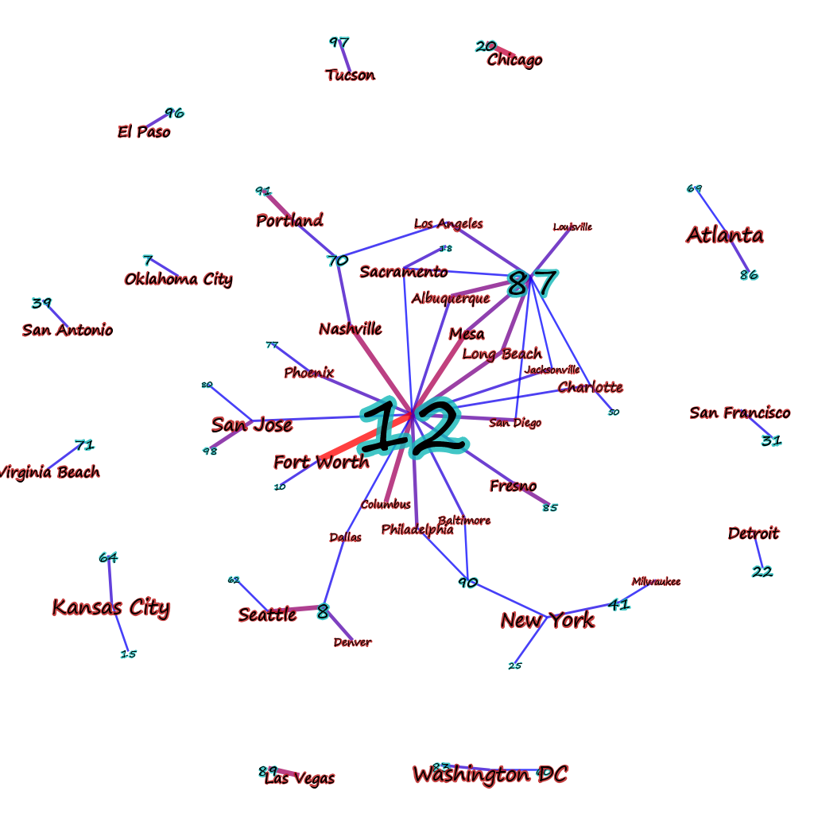
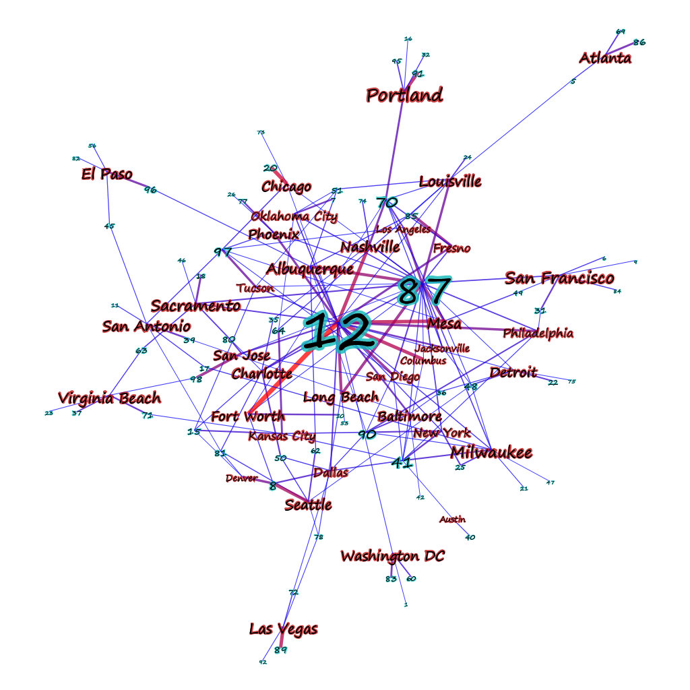

Documents–in this case aggregated based on city–connected to topics based on the strength of representation of that topic in that document (or in this case, meta-document, since its a collection of documents tagged with a city name).

The above image shows “strong” connections to topics that make up over 10% of the topic representation of a document. If the threshold is lowered to 5% the picture becomes a bit less clear.

Reducing the threshold any more than that shows too many connections to make drawing the data worthwhile, and is best approached using statistical measures. We already do this when we show a network that has nodes and edges sized and shaded based on particular measures–the above uses PageRank (since it’s the only centrality metric in Gephi that currently takes into account edge weight) to determine node sizes and edge weight to determine edge color. In comparison, a rather cluttered network of genealogical connections tying together a group of British admirals (in purple):

The centrality measure determining size in this case is Eigenvector centrality, since the edges are unweighted and undirected, which contrasts nicely with betweenness to and closeness to see develop a proxy of who’s connected, who’s necessary, and who’s important. Edge color indicates type of connection, whether lineal (blue), sibling (purple), or spousal (green). It’s very difficult for a visual description of such a network to do more than convey a sense of how messily connected the British ruling class was.